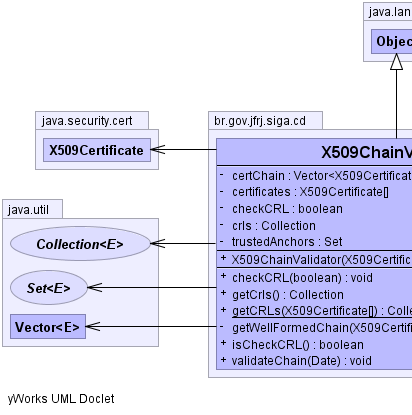
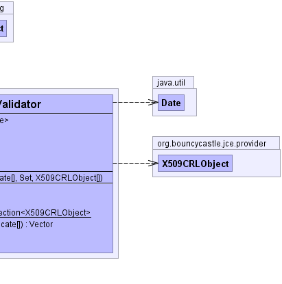

br.gov.jfrj.siga.cd.X509ChainValidator
br.gov.jfrj.siga.cd.X509ChainValidator
|
|||||||||
| PREV CLASS NEXT CLASS | FRAMES NO FRAMES | ||||||||
| SUMMARY: NESTED | FIELD | CONSTR | METHOD | DETAIL: FIELD | CONSTR | METHOD | ||||||||
java.lang.Object
public class X509ChainValidator
Classe responsável por realizar a validação de um certificado. É verificada toda a cadeia de certificação, assim como as CRLs dos certificados existentes na cadeia. Por default, X509ChainValidator não faz a verificação das CRLs. Para tanto deve-se chamar o método checkCRL(true).
|  |  |
| Field Summary | |
|---|---|
private java.util.Vector<java.security.cert.X509Certificate> |
certChain
|
private java.security.cert.X509Certificate[] |
certificates
|
private boolean |
checkCRL
|
private java.util.Collection |
crls
|
private java.util.Set |
trustedAnchors
|
| Constructor Summary | |
|---|---|
X509ChainValidator(java.security.cert.X509Certificate[] certChain,
java.util.Set trustedAnchors,
org.bouncycastle.jce.provider.X509CRLObject[] crlArray)
Construtor para X509ChainValidator. |
|
| Method Summary | |
|---|---|
void |
checkCRL(boolean checkCRL)
Por padrão a verificação de CRLs fica desabilitada. |
java.util.Collection |
getCrls()
|
static java.util.Collection<org.bouncycastle.jce.provider.X509CRLObject> |
getCRLs(java.security.cert.X509Certificate[] certChain)
Método interno para ler todas CRLs de todos os certificados passados para o objeto. |
private java.util.Vector |
getWellFormedChain(java.security.cert.X509Certificate[] certificates)
Este método gera, a partir de uma cadeia de certificados completa, uma cadeia de certificados válida para o algorítmo de validação de cadeias PKIX. |
boolean |
isCheckCRL()
Método para descobrir se a verificação de CRLs será usada ou não. |
void |
validateChain(java.util.Date dtSigned)
Este método realiza a validação da cadeia de certificados. |
| Methods inherited from class java.lang.Object |
|---|
clone, equals, finalize, getClass, hashCode, notify, notifyAll, toString, wait, wait, wait |
| Field Detail |
|---|
private java.util.Vector<java.security.cert.X509Certificate> certChain
private java.util.Set trustedAnchors
private java.util.Collection crls
private boolean checkCRL
private java.security.cert.X509Certificate[] certificates
| Constructor Detail |
|---|
public X509ChainValidator(java.security.cert.X509Certificate[] certChain,
java.util.Set trustedAnchors,
org.bouncycastle.jce.provider.X509CRLObject[] crlArray)
certCadeia - Deve ser uma cadeia de certificados válida, de acordo com o
PKIX.trustedAnchors - Um ou mais certificados raiz.| Method Detail |
|---|
public java.util.Collection getCrls()
public static java.util.Collection<org.bouncycastle.jce.provider.X509CRLObject> getCRLs(java.security.cert.X509Certificate[] certChain)
throws ChainValidationException
ChainValidationExceptionbr.com.certisign.utlis.CRLLocatorprivate java.util.Vector getWellFormedChain(java.security.cert.X509Certificate[] certificates)
certificados - -
Cadeia de certificados completa, incluindo o certificado raiz.
public void validateChain(java.util.Date dtSigned)
throws ChainValidationException
ChainValidationException - indica que houve um problema na validação da cadeia.public void checkCRL(boolean checkCRL)
checkCRL - -
True para verificar as CRLs da cadeia de certificadospublic boolean isCheckCRL()
|
|||||||||
| PREV CLASS NEXT CLASS | FRAMES NO FRAMES | ||||||||
| SUMMARY: NESTED | FIELD | CONSTR | METHOD | DETAIL: FIELD | CONSTR | METHOD | ||||||||